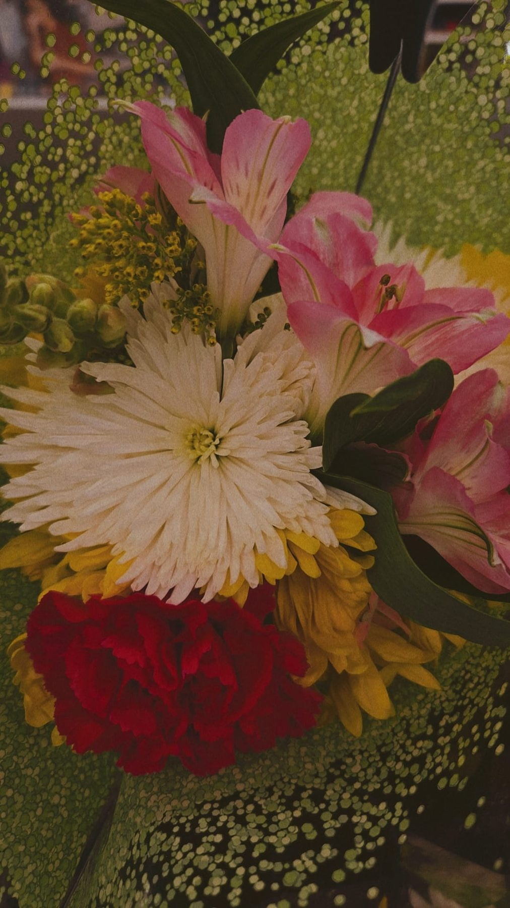
01 / GLOW UPBeauty & Skincare
New finds, favorite routines, and a little everyday sparkle.
A thoughtfully curated corner of the internet for creativity, everyday moments, and everything in between.
explore my world ↗ made with love & a little daydreaming ↗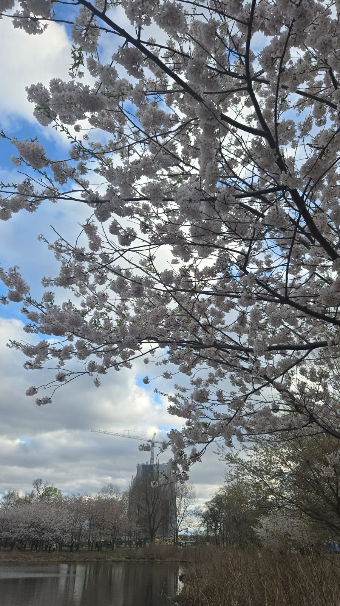
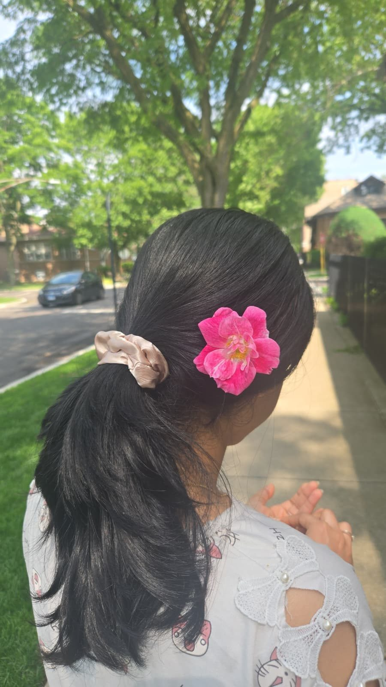
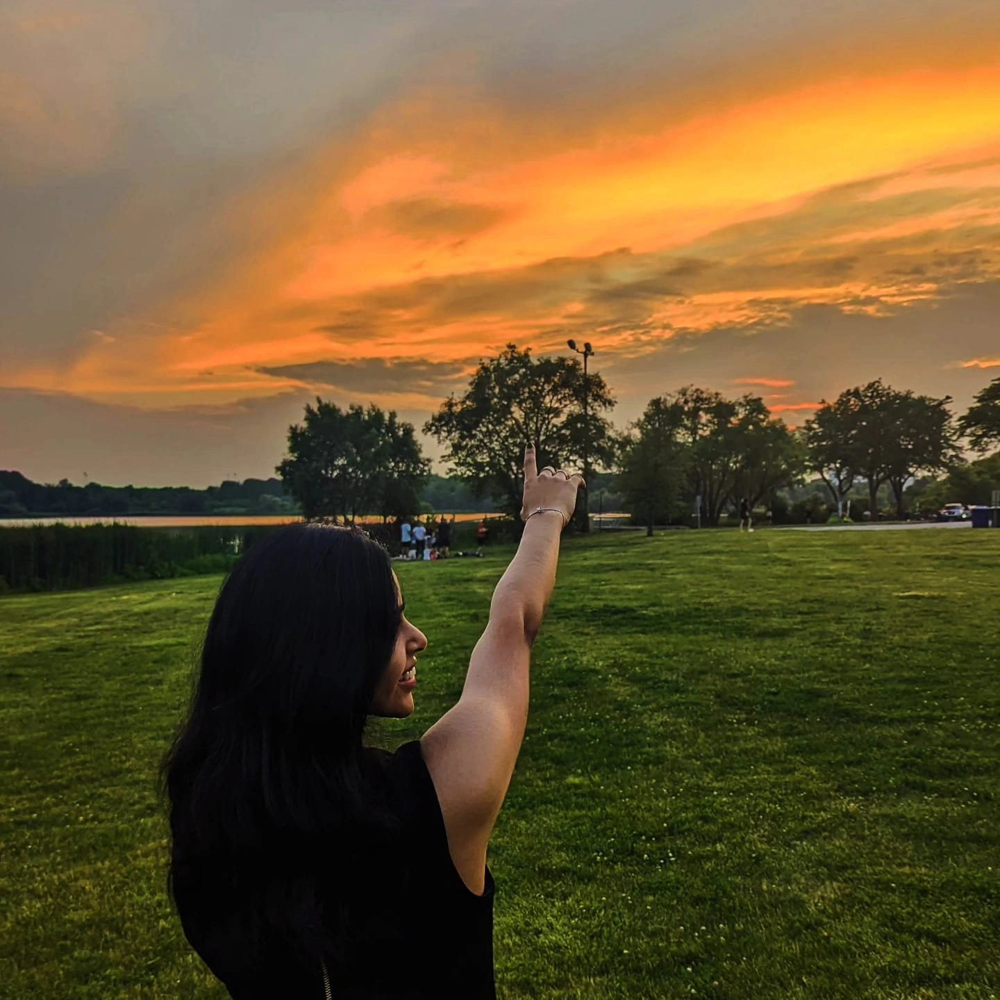
hi, i'm Lucky! ♡A little bit of everything, and always curious about what's next.
I'm the kind of person who wants to try everything at least once. One day it's badminton, the next it's pottery, dancing, experimenting with skincare, discovering a cute café, or finding flowers I absolutely need to photograph.
I love beautiful spaces, good food, spontaneous adventures, little self-care rituals, and collecting moments that make ordinary days feel special.
The Life Edit is my happy little corner of the internet — part digital diary, part inspiration board, and part creative playground. I don't believe in having just one interest or fitting into one aesthetic.
a little chaotic, a lot curious, and always collecting new favorites ✳
explore my favorite things ↗Too many hobbies? Never. Here are a few of my current favorites.

01 / GLOW UPNew finds, favorite routines, and a little everyday sparkle.
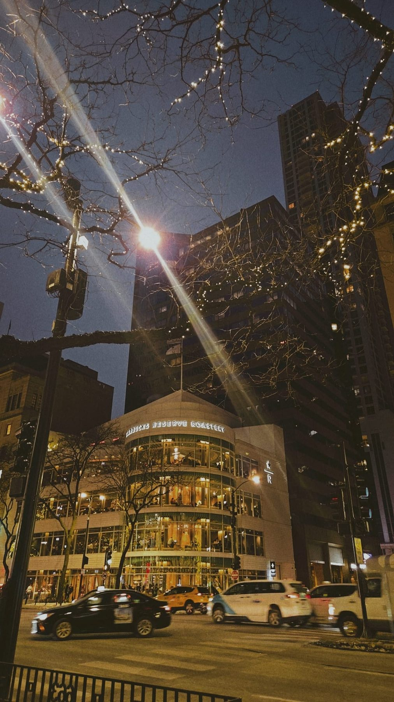
02 / COFFEE DATEPretty cafés, cozy corners, and always another coffee.
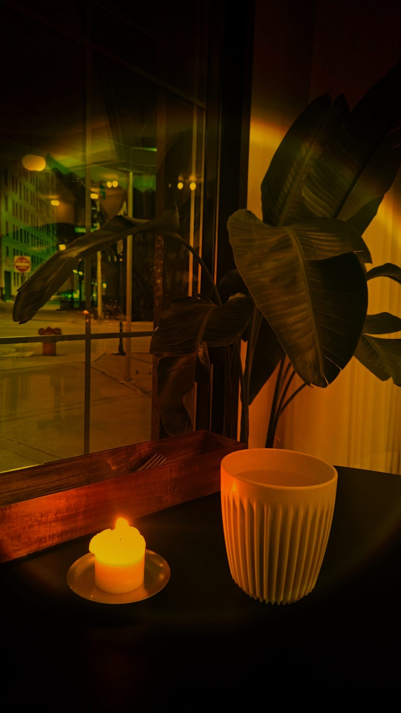
03 / ME TIMEMoving, resting, resetting, and finding my own rhythm.
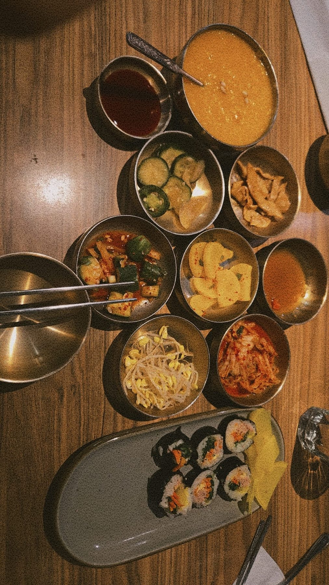
04 / SOMETHING DELICIOUSKitchen experiments, comfort food, and trying new flavors.
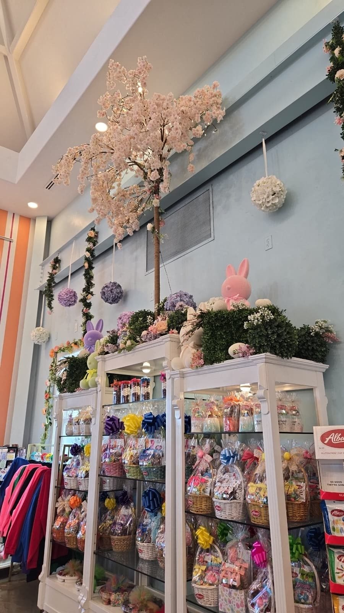
05 / PRETTY LITTLE SPACESFlowers, pottery, beautiful details, and spaces with personality.
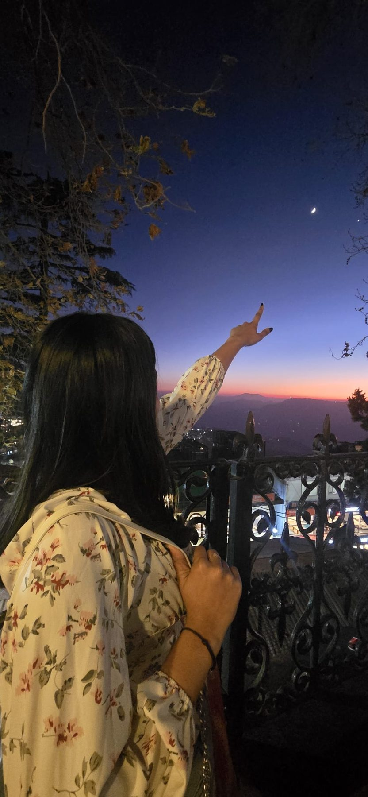
06 / LET'S GO SOMEWHERENew places, unexpected adventures, and stories worth keeping.
A scrapbook of the things I love, places I go, and moments I want to keep.
♡ A little scrapbook of the places, colors, and moments I want to keep.
A growing collection of ideas, moodboards, and visual experiments.
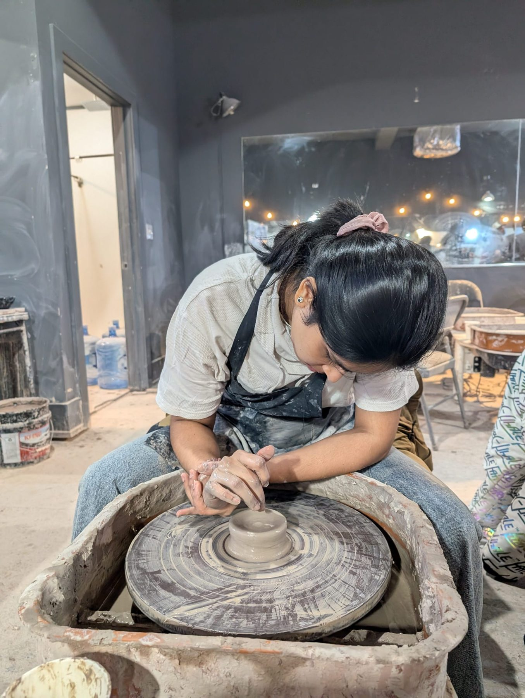
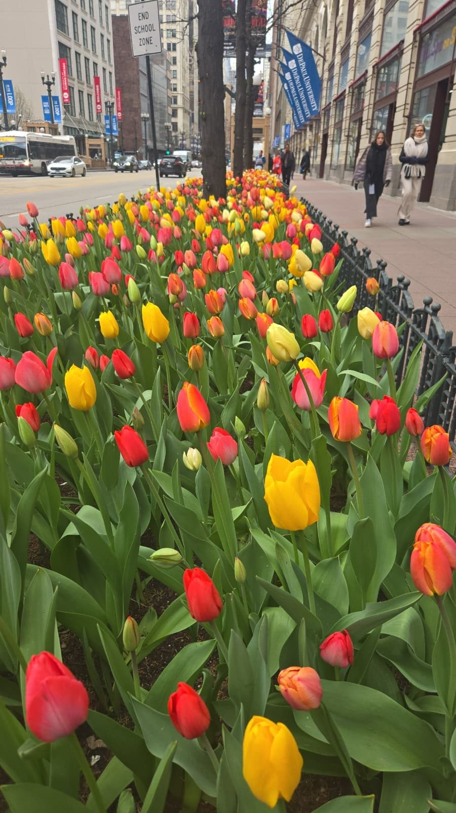
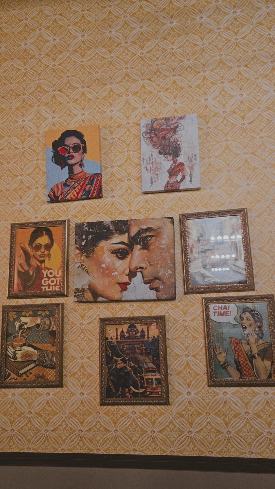
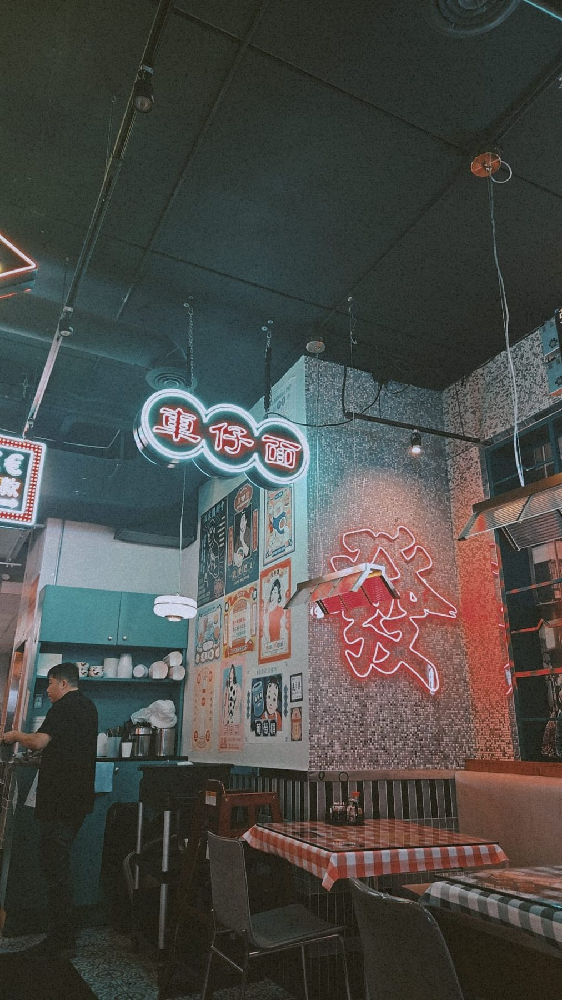
Little moments, big ideas, and everything that inspires me. ♡
Snapshots, stories, and moments worth remembering.
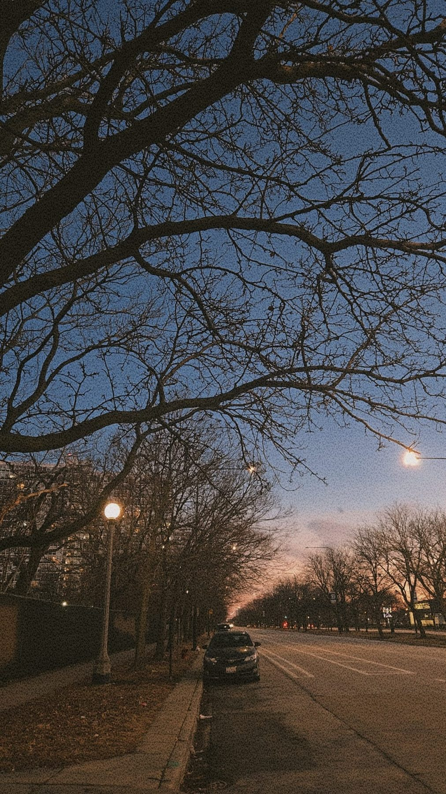
Finding joy in the in-between moments.
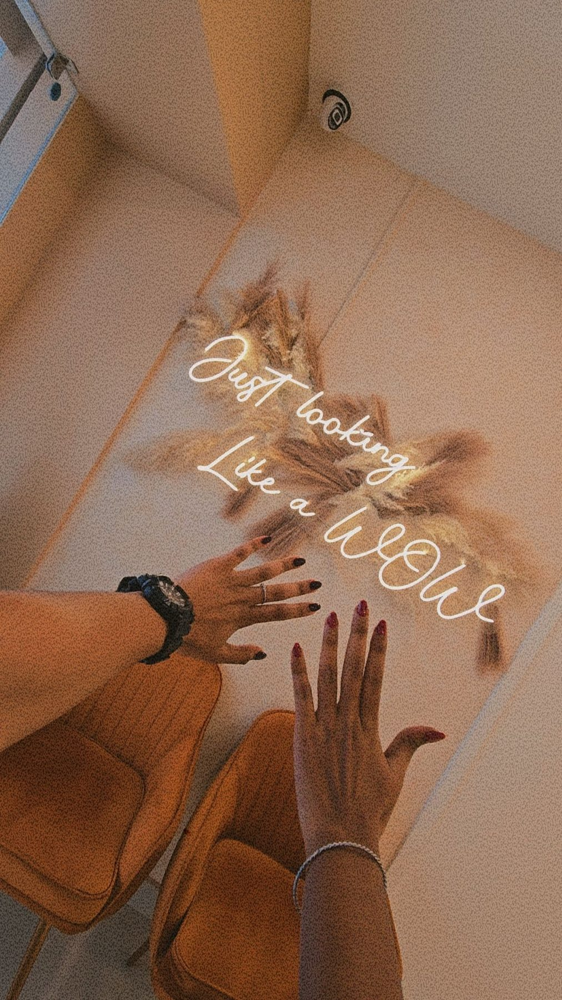
Little things currently on my moodboard.
A little space for my imagination to run wild. From moodboards and designs to spontaneous ideas and creative experiments, this is where I collect everything I love making. ✨
explore my creations ↗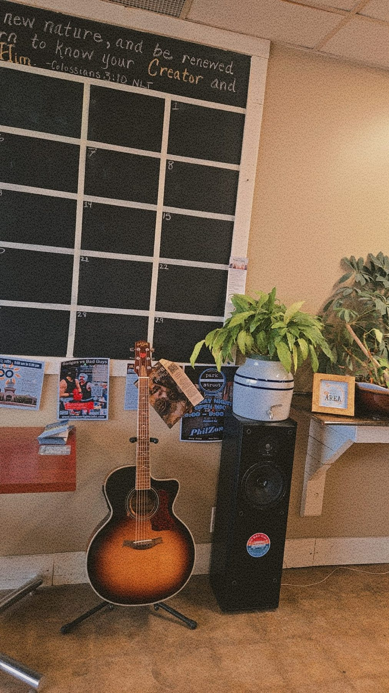
your imagination, unlimited ✳